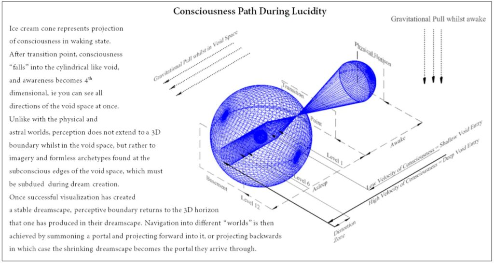
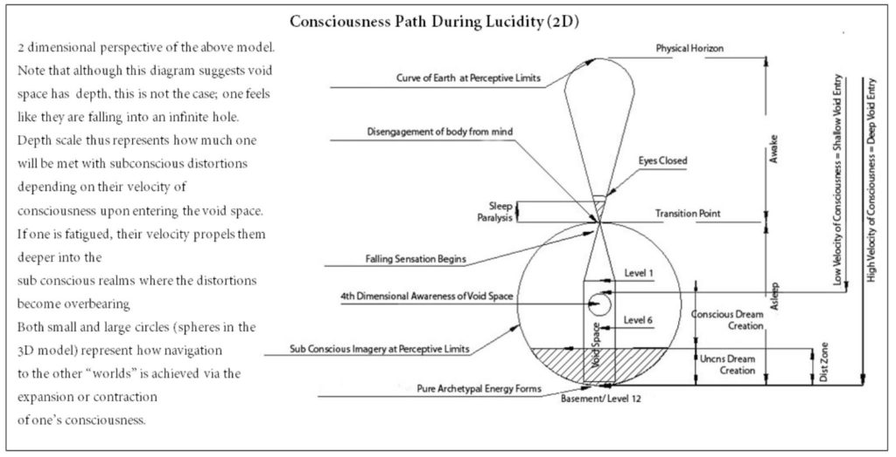

The following is the eleventh part from a series of articles describing the adventure that a follower who goes by the handle "daegonmagus" has experienced since reading MM. They are very interesting and fascinating. I hope that you all learn from his journey and maybe learn a thing or two as he relates his unique experiences to the readership here. -MM
Part 11 – Lucid Dreaming Lesson 3 Techniques for Inducing Effective LDs
In this lesson we are going to get into some techniques myself and SD have used numerous times to induce LD with a great measure of success. These techniques are entirely my own; I am yet to see them being used anywhere else.
The methodologies came about entirely by accident and through observations of my environment {both mental and physical} either immediately from waking up from an LD or taking note of certain things before one was initiated that I would remember afterwards.
Some of these techniques are particularly effective at inducing a WILD even from a heavily fatigued state of mind. In fact, they seem to work better from this state.
Before I begin though, a quick word on the “cheats”:
.

Drugs and Alcohol
Many people suggest explicit substances such as drugs and alcohol can have a

negative effect on ones ability to LD. While I was never big on anything harsher than marijuana, I cannot specifically remember ever having an LD experience whilst under the influence of such a substance.
I am generally skeptical when it comes to using drugs to initiate an LD.
This is mainly because I believe they distort the mind too much to make becoming lucid whilst in the dream state feasible. I have had friends who have used LSD and DMT to try and initiate an astral projection.
I sincerely advise against it.
All it seems to have done for these people is given them a fast tracked ticket to the mental health ward of their local hospital. Though, I suspect the LD/AP thing was really more of an excuse to justify their addiction to these substances.
If one has not taken the psychological preparation necessary, then they are leaving themselves open to all sorts of trouble.
This is of course, my own opinion.
Alcohol, is different for me. Whilst I have never had an LD under its immediate influence I have had many LDs during the hangover recovery phase the day after a major bender.
I have actually used alcohol to deliberately try to induce an LD in this manner.
Though it seems to work better when I haven’t had LD as an intention. Be warned though, the level of alcohol needed to put you in a state of such dissociation from the body could be considered lethal by many people’s standards. It is also for this reason, I really don’t recommend it as a feasible avenue to LD.
However, if you are planning on indulging in it quite liberally, I see no reason why you can’t give LD a try when you are lying half comatose in bed with a blanket of regret over you to keep you warm, as you tell yourself “never again”.
You might as well try and get something out of the annihilation of brain cells.
I have noticed it is particularly easy to tune into non physical chatter whilst in bed and still reeling from a particularly bad hangover. I am not trained in psychology, so I will skip going into my opinions on why this would be.
Non Physical Chatter:
Whilst we are on the subject, I feel the need to mention some things I have noticed in regards to non physical chatter.
Whilst not necessarily LD related I believe they are worth experimenting with.
The most noticeable is the way pressure is applied to the head when one is about to fall asleep.
I have found that there is a correlation with me lying in such a position that most pressure from my pillow presses on the top, middle right part of my head, and having strange “visions”.
A common theme is what appears to be a very vivid movie real of an unfamiliar cartoon.
It is in a similar style to the old Felix the cat cartoons. A similar cartoon has been mentioned by members of the occult/LD community, and by SD.
I have also noticed that if I fall asleep lying down with my head on my propped up elbow, then there is potential for audible chatter that is clearly not related to my own thought train.
There seems to be a grey area of conscious awareness where this chatter is at its most extreme.
An effective method to “catching it” is to count up to 5 minutes; when the mind is preoccupied with focusing on the counting, it is incredibly easy to notice when the chatter appears because it completely derails the counting.
“The Emerther are scared to death for many reasons that lead back to the human race”, “Japan has nothing at the edge of their chasm”, “Please be careful” are examples of the things I have heard whilst in this grey area. It seems to correspond to the M Band noise mentioned by Bruce Moen.
Diet and Exercise.
I have been asked if there is a correlation with diet and LD, and honestly I can’t say I have really noticed anything to be that beneficial.
This is not to say there isn’t an eating plan you should try, more so that I just never bothered looking too deep into this aspect.
By all means if you find someone who suggests something an eating regime specifically to induce LD, then give it a try and get back to me on how it went for you.
In saying this though, my most intense period of lucid dreaming was when I was working out on a regular basis with a goal of getting fit enough to join the Defense Force.
At the same time I was also eating quite healthily, so it is hard for me to tell if my heightened level of lucid awareness of the dream state was because of the exercise, the diet, or both.
It could have been a result of the location for all I know.
I can’t give a definite in this regard. What I do know is that my diet and exercise regime is no where near as healthy as it was, and my lucid dreaming ventures have taken a nose dive.
Hopefully I’ll start getting back into it when my youngest is a little bit older. I am curious to see if my forays into lucidity start to come back a bit stronger under a healthier lifestyle.
What I did noticed with two rather potent LD experiences that happened only a few nights apart is that I had some sort of spicy chicken dish followed by a dose of sugar.
There appeared to be no correlation in “healthiness” with these foods; one was a lean Thai curry with a portion of cake for dessert, the other was standard hot and spicy KFC followed by a typical sugary drink from that food chain.
I suspect it has to do with the chemical change from the chili/ sugar content that is registered via the subconscious mind whilst in the dream state. I suggest exploring this avenue further and experimenting with it if you are game enough.
Thought Placement:
Many DILD techniques involve the use of “reality checks” to help stimulate the sub consciousness mind into becoming lucid.
These basically consist of a series of checks you do each day whilst awake which hopefully carry over to the dreaming domain and allow you to come to the realisation you are lucid. “Am I awake, am I asleep?” that sort of thing. Similar to me throwing my bass guitar in the pool.
In the movie Inception, Leornado DiCaprio employs the use of a spinning top as a reality check. He spins the top and if he is awake it eventually slows down and falls over due to the lack of centrifugal force.
The tell that he is still dreaming is that it continues to keep spinning unencumbered by the lack of physics.
I recommend watching this movie.
It not only is a good representation of LD in general, but also highlights the importance of being psychologically ready before undertaking extensive voyages into the Lucid planes.
In the movie, DiCaprio’s wife ends up killing herself because she believes she is still dreaming and needs to wake up, despite DiCaprio insisting she is already awake and back in the physical reality.
Another thing Inception portrays really well is the layering depths of dreams one may delve into and how time becomes distorted in these other “dream worlds”.
When you get good at LD, it is easy to get carried away and start going deeper and deeper into a dream within a dream within a dream.
You must learn and employ your safeguards so you know how to properly get back from such a maze.
This may sound somewhat silly, but believe me, I have been trapped in lucidity for “years” only to wake up to find a single night has passed; it can really fuck you up if you are not prepared for it.
Another thing to be aware of is that it can be quite depressing visiting an LD Utopia only to have to wake back up into this physical plane.
Expect a readjustment period of at least a few days.
Thought Placement for DILDs
Through my observations I have found that there is a correlating timeframe that thoughts can be used to stimulate the sub consciousness in the dream state.
This came about by having dreams with elements that I could pin point back to a very specific time of having that thought element during the day time.
It appears that around 10 to 10 and a half hours, and half an hour before going to sleep (not just going to bed) are prime times for instilling thoughts about doing reality checks and lucid dreaming.
Of course, this means having a strict bed time schedule and understanding how long it actually takes you to get to sleep once in bed.
The Dream Blanket
I have a book written by a guy with Native American blood that talks about the shamanic practice of “shapeshifting”. The Art of Shapeshifting by Ted Andrews.
It is essentially about using dances that mimic certain animals and special talismans for remote viewing and lucid dreaming purposes.
While I never got into the dances, one of the talismans I found curious was a blanket that you drape across you every time you are consciously trying to LD.
The theory by the author is that every time you have a LD you subconsciously imbue this blanket with dream energy, which eventually makes it easier to lucid dream, as you connect with this energy when fall asleep.
The dream blanket is considered so sacred by him that he suggests locking it up within a special chest and not letting it come into contact with other artifacts lest it becomes tainted by their energy.
It must only ever be used for Lucid Dreaming.
I tried using a piece of expensive silk fabric for this purpose but it was not clear if it had any profound effect.
In saying that, I have noticed it takes awhile to build up “LD momentum” if the blankets are changed from ones I have been using during periods with many LDs. Purple and blue colored linen seems to work the best.
The Pillows:
Did you end up buying a triangular {right angle} shaped pillow? If not, don’t worry too much about it.
Some regular pillows that are quite “puffy” with a good puff to density ratio will do just fine.
Try to avoid ones that are so puffy that your head falls right through them though.
The reason triangular pillows are good is that they wrap around the entirety of your neck and give you’re the head the support it is going to need when undertaking the main LD inducing technique, the hanged man pose.
You can get by without it, but I have found one side of my neck quickly gets quite fatigued without this support base from the pillows.
If you are using standard rectangular pillows, their arrangement will be crucial to whether or not the technique works, and it may take quite a few adjustments to get them “right”.
I hope you have been practicing the stillness of the body meditation, because you are going to need it for the next part:
Onto the techniques
The Hanged Man Pose:
Over the many years I was engaging in LD, I started noticing “commonalities” between when I would have an LD and the arrangement of my body when waking up.
The most notable of such commonalities was a particular pose I usually {not always} found myself in immediately upon waking from my LDs.
Curious, I began experimenting with this pose.
I would take a few minutes after awaking into to it to study it in depth without moving, then try to recreate it whenever I’d go to bed to try and initiate an LD.
More often than not it would work for both DILDs and WILDs.
In fact some of the most vivid LDs I have had have been from using this very pose. I explained it to SD and she began using it, and reported that it works quite well for her.
As far as I am concerned, this is the secret to initiating an LD.
The pose itself is quite easy to get into.
The difficulty, however, comes when trying to remain in it without moving. Hence why the practice of the stillness of the body is crucial to mastering it. And hence why pillow arrangement is crucial to its correct use.
Five minutes after getting into this pose I guarantee every ounce of your being will be telling you to move into a more comfortable position; It is an incredibly uncomfortable position to be in.
It is not as if you are going to be doing yoga or anything.
It is more that you will be stretching certain muscles and placing weight on your body in a way that you are not used to.
You need to just suck it up and lie there if you want it to work properly.
Hopefully, after a few weeks you will automatically start taking up this position as you sleep.
So how do we get into the pose?
Well, there is a reason I call it the Hanged Man pose, and this is because it is similar to the Hanged Man in the Tarot deck.
Traditionally, this card depicts a man hanging upside down with his arms at his side and his leg bent at such an angle so that it touches the knee of the opposing leg.
While I have used this exact pose, for LD, I prefer to alter it slightly.
Rather than have the leg bent at a 90 degree angle, simply place the heel of your right foot on top of your left when you are laying down.
If you find this too uncomfortable you can alter it so that your feet are to the side of each other.
The crucial thing, though is that the two must be touching.
The arms can either relax at your side or be placed upon your sternum; that latter seems to work better.
Keeping your back flat to the plane of your mattress, you then need to bend your head to the right so that your right ear is completely covered by your pillow.
Aim to create a “seal” around your whole ear so that no air can escape.
Again, I have found the triangular pillow makes this easier to achieve.
I am not sure why this works so well. I suspect it has something to do with unbalancing the inner ear or something to do with redirecting the flow of energy through the body, which are picked up in dreamtime.
One thing I know for certain though, is that it gets results. Provided you can keep it up.
The Tennis Match Scenario:
This will consciously carry you from an awakened state through the transition into the dream state and on into the Void Space if done correctly, regardless of your fatigue level.
In fact, most of the WILDs I have had have been from utilizing this technique, or a slight variant of it.
Consider it a cheat code to getting into the void space.
To understand why it works you need to understand the way consciousness “collapses” back in towards the pineal gland as you enter the dream state.
This is a complete inversion of the consciousness you use whilst engaging in physical reality whilst awake.
If you are successful with this technique, you will experience this inversion.
It works particularly well when you are fatigued to the point of being in danger of falling asleep within minutes of your head touching the pillow, which is why I like it.
I used it quite a lot when I was working a full time job as an assembler in an electronics factory.
I was getting up at 4:30am and getting home at 6pm, completely exhausted, and yet it still worked.
So if this sounds like your sort of lifestyle, I recommend trying it.
You start by visualising a tennis match between you and an opponent.
It has to be a first person view on your part. You need to visualize this as if you are actually there, playing tennis, with the net in front of you and the racket being held in your hand.
It can’t be from a third person viewpoint.
Pretend it is your opponent’s turn to serve.
I find it easier to visualize slow serves that gradually build in pace, but if you are too fatigued just go right on to the fast serves. You need about 5 seconds worth of unbroken, vivid visualization of your opponent smashing the ball as hard as they possibly can.
Repeat the visualization with the ball flying past your head.
After every 4th or fifth hit, make the ball hit square in the middle of your nose.
Hopefully, in your fatigued state, your mind will automatically keep replaying the scenario, and eventually start believing it is real.
The goal is to have it react with a surge of adrenaline as the ball hits your nose, thinking there is a very real possibility of your nose being broken.
This surge of adrenaline, I have found, is just enough to awaken you back into a conscious understanding that you are almost asleep.
At the same time, your consciousness “locks” onto the ball, and is projected back in towards the pineal gland the same way it collapses into the dream state.
Because the adrenaline has made you lucid, you consciously witness that transition before the adrenaline disappears.
The speed of which consciousness enters into this transition is what I term as “the velocity of consciousness”.
From my experiences, this velocity can be anywhere between the speed of a properly served tennis ball to that of a bullet.
I suggest experimenting with different scenarios that involve different speeds, to see if you can find something that works better for you.
A variant of this technique I found also works well is by imagining a fast orbiting satellite near a planet that you “spin” off its trajectory and have it hit you.
In my case, it was a dodecahedron spinning about a tetrahedron; both are heavily related to occult philosophy. They are platonic solids.
The Velocity of Consciousness and the Void Space.
The speed at which your consciousness inverts and falls back through pineal gland will dictate how deep one falls into the void space.
I mentioned in the previous lesson that distortions will come into play and that these distortions will dictate how successful your lucid dream will be.
With a high velocity of consciousness, one risks penetrating too “deep” into the void space where the distortions are at their most extreme.
The tennis match/ orbiting satellite visualization seems to instill consciousness with a velocity so that It can reach a shallower level of the void space.
Coming from sleep paralysis on the other hand, the distortions can be anywhere from mild to extreme.
These distortions will last only whilst in the void space, but they have the potential of completely destroying the lucid dream.
The reason for this is because it takes an incredible amount of visualization willpower to be able to create a dream; all focus must be put towards this end.
If the mind is busy dealing with using it’s visualization resources trying to neutralize these distortions, then proper dreamscape visualization cannot take place.
Unfortunately I have no remedy for when these distortions are at their maximum.
I have rarely been able to make it past this stage when they are, and the times I have, my dreamscapes have been a random mess of corrupted data.
Even the most basic of dreamscapes become impossible to visualize, and movement within them becomes even harder.
Don’t feel disheartened if these distortions ruin your LD. This happened to me more times than I can count. Perseverance is the only way through
Dream Creation From the Void Space:
Dreams created from the void space are not standard dreams, and neither are they typical LDs.
When done properly, one can exhibit almost total control over what appears in the dreamscape, and can use this for exploration of the non physical worlds.
Many experts will suggest this is astral projection, other experts will claim that LD cannot be used for such traveling or that it is really just a trick of the mind and you are not really “traveling”. My personal experiences suggest differently on both accounts.
To create a dreamscape to this extent you MUST take control of the distortions before the intent to create a dream even comes up whilst you are in the void space.
The reason for this is that to create a proper dreamscape takes an immense amount of will power and conscious focus.
If majority of that focus is spent dealing with the distortions after the dream has been created, your dream will not be stable and will “fall apart,” waking you up in the process.
Strong visualization practices to counter the distortions are the only thing I know that works, hence why you don’t want the distortions to be anything other than weak.
Once confidence of dominations over the distortions has been gained, there is a certain trick to being able to create a stable dreamscape.
Remember, you need to be able to think of all of this on the fly – you won’t have time to try and process and remember it all from scratch, so I suggest running through the process multiple times so it becomes automatic.
Rather than start surrounding yourself with items you wish to be present in the immediate environment, I have found it more beneficial to visualize the extremities of the particular scenario – if your eyes were functioning in this state, it would be equivalent of creating the objects you can see at the horizon.
The next trick is to switch your attention from this horizon onto the area encompassing a few meters around you without letting it collapse.
This is where the level of the void space you are in comes in to play; if you are too deep into it, close to the depths of the basement, you will be met with distortions in your visualisations which will “attack” them and ultimately collapse the environment around you, resulting in you waking up back in the physical world.
It takes great practice to be able to create a dream environment like this, then switch to populating it with whatever objects or people, smells etc, you desire without it collapsing, but it can be done to the point one can experience the same sensations they feel utilizing a physical body, such as smell, touch, taste etc.
This is something I was doing consistently in my youth, almost 3 times a week.
The number one rule is that once created, no conscious thought can be allowed to be given to the structure of this environment, as this will also cause it to collapse; you have to just create it, and “know” it is around you and move straight into and interact from within it; if you find yourself focusing on one particular thing during the creation stage, you need to quickly find something else and use that to anchor your dreamscape, and you keep doing this until it becomes stable.
You can then manifest a dream body if you wish, or continue to operate without one.
Once stable, the dreamscape can be interacted with just like any physical environment (but more profoundly).
This is the art of applying velocity to consciousness; once a dreamscape has been created, consciousness can move about in it simply by picking a point and focusing on it, much like with astral projection.
Time and space become irrelevant factors, as one is immediately “teleported” to the point of imagination, hence why the control of one’s imagination is such an important factor.
Just as the infant must learn to use its legs to walk through its physical environment, so too must one learn to use the points around them to move within their lucid environment.
By having an idea beforehand of what sort of dream environment one wants to build, and an object that can be summoned and moved away from the area closest to you after your horizon has been established, one can smooth out the whole process and evade the distortions before they begin to present themselves.
I have been known to “free fall” in the void for long periods of time – hours in fact – whilst I decided what dream I wanted to create, or simply for relaxation/meditation purposes.
I have also been known to switch dreamscapes as easily as one walks through a door, jumping from world to world as if I was walking into different rooms.
All this can be done via the portals when one becomes skilled at visualization practices.
Summoning the Portals:
Once you are certain your dream is stable – ie you can move about it within it fairly easily without having to think too hard to keep it in place – the portals can summoned to allow for travel to other non physical locations.
I really do not know how I learnt this; it was just something I “knew” how to do quite effortlessly whilst in an LD. A memory of sorts.
The portals themselves are quite small, and spherical shaped, about the size of a tennis ball.
They are, on first summoning of them, a pearlescent white color.
If you consider your vision straight ahead as being a flat plane at 0 degrees, the portals are off set above your vision at about a 6 degree angle from your eyes, and several feet away.
They exist in your close range top peripheral in other words, right on the edge of your focusing range.
The means for using them is this; you summon them in their pearlescent white form, then you “attach” an environment to them so they become a mini “world” display of the environment you wish to travel to.
They act as a means to contain very specific visual coordinates of a non physical location that will not be subject to the distortions in your immediate environment.
Once they have been summoned, and your visual coordinates have appeared on their surface, you then project or “jump” into them by contracting your consciousness (remember I said consciousness in a non physical state can contract and expand?).
You then come out at the location in question.
Though the portals can be used as a means to travel to one’s own self designed dreamscapes, there are other locations that I have accessed multiple times without any need to create them using the same portals; when accessed, it is as if they automatically materialize in one’s own void space without any visualisation input.
The amount of time I have spent in these particular places equates to a great deal more than someone who goes on regular holidays.
Many of them have their own portals in certain places that access other parts of the other “worlds”, so that, ultra dimensionally, they are all, in some way, linked together.
The portals can allow two way access by using the expansion of consciousness method rather than the contraction method, but I will cover this in the next lesson.
You can visit the daegonmagus Index here…
MM Articles & Links
You’ll not find any big banners or popups here talking about cookies and privacy notices. There are no ads on this site (aside from the hosting ads – a necessary evil). Functionally and fundamentally, I just don’t make money off of this blog. It is NOT monetized. Finally, I don’t track you because I just don’t care to.
- You can start reading the articles by going HERE.
- You can visit the Index Page HERE to explore by article subject.
- You can also ask the author some questions. You can go HERE to find out how to go about this.
- You can find out more about the author HERE.
- If you have concerns or complaints, you can go HERE.
- If you want to make a donation, you can go HERE.